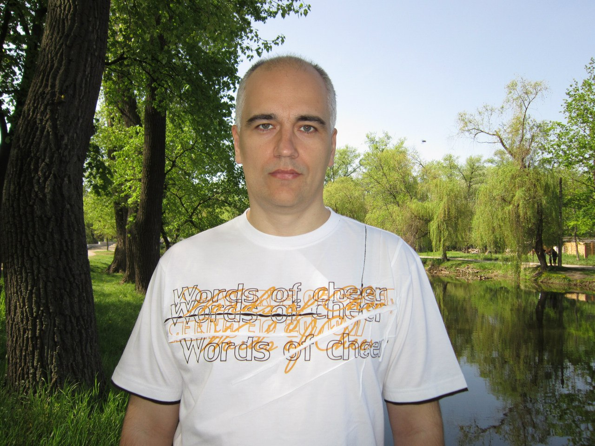

Доцент (до 2017 года) кафедры компьютерных наук (до 2016 года - кафедра информационных технологий KIT) математического факультета (MATH) Запорожского национального университета (ЗНУ)
Для участия в соревнованиях по программированию (и вообще профессионального развития как программистов) - регистрируйтесь на сайте www.e-olymp.com.
Для участия в олимпиадах по программированию ЗНУ - при регистрации укажите в профиле реальные ФИО, вуз, группу. Напишите сообщение мне - мой профиль на сайте www.e-olymp.com/ru/users/bdp. Я вышлю вам приглашение в группу ЗНУ на сайте e-olymp (она в процессе создания). Вы принимаете приглашение и получаете доступ к групповым соревнованиям среди студентов ЗНУ.
Виртуальный процессор POSTRISC.